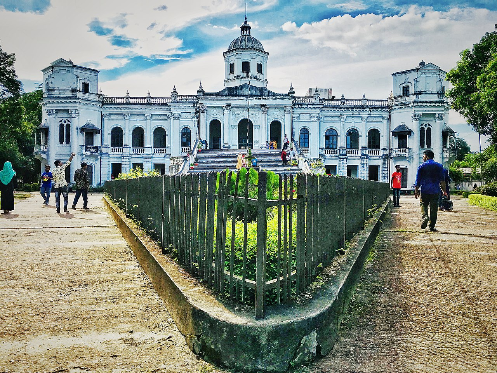
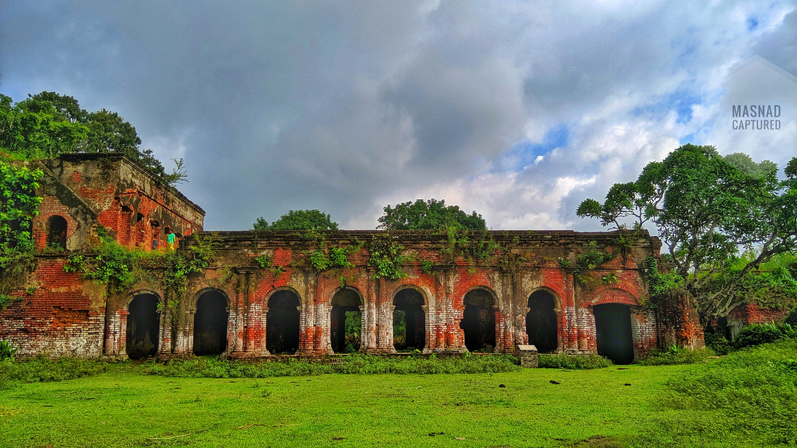
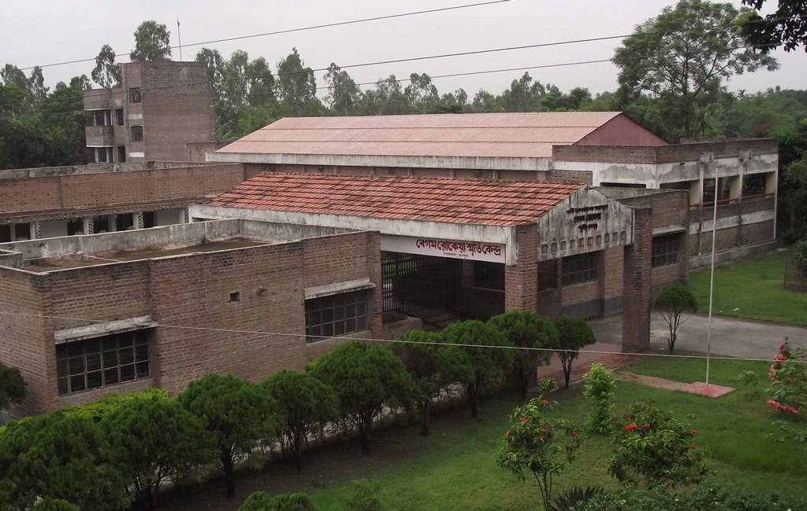
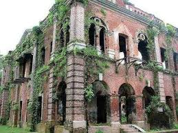
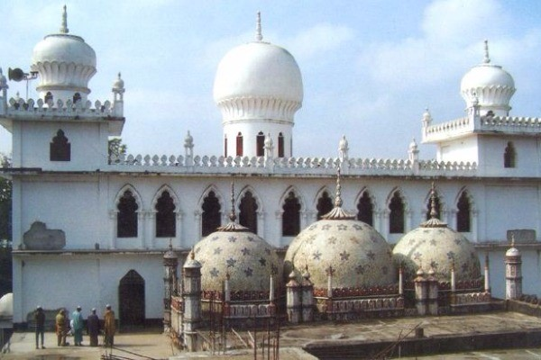
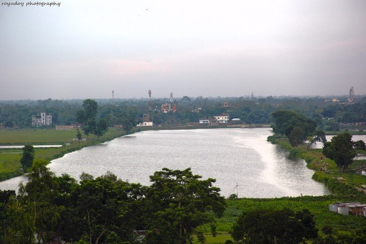
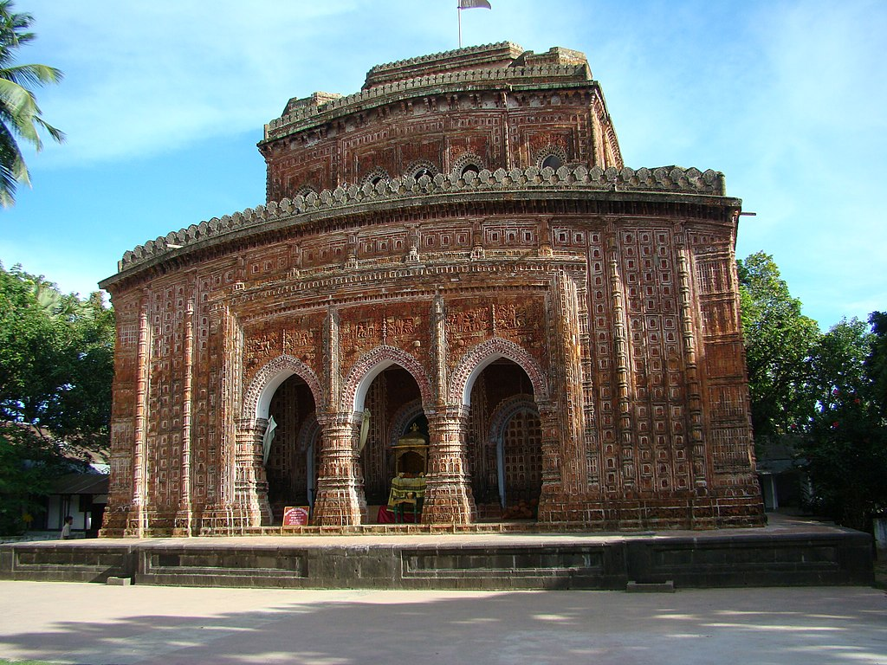

1. Tajhat Palace
Tajhat Palace, Tajhat Rajbari, is a historic palace of Bangladesh, located in Tajhat, Rangpur.[1] This palace now holds the Rangpur museum.[2] Tajhat Palace is situated three km. south-east of the city of Rangpur, on the outskirts of town. The palace, with about 76 metres frontage, rises two storeys and faces east. An imposing broad staircase in the centre, paved with imported white marble, leads directly above the portico to the upper storey. The palace is crowned by a ribbed conical dome in the centre of the roof with a tall octagonal neck, partly supported on a series of slender semi-Corinthian columns. The balustrade on either side of the imposing staircase was originally embellished with various sculptures of classical Roman figures in Italian marble, but now these are missing. There are two semi-octagonal projections at each end of the front face and a central projecting porch. The balcony roof above the porch is carried on four graceful Corinthian columns with round shafts, while two similar columns on each of the projecting ends of the building support a triangular gable. The palace is laid out in the form on a "U", with its open end to the west. Beyond the entrance at ground-floor level there is a very large hall, measuring more than 18 x 13 meters. A 3 meter wide corridor runs the entire length of the inner block. Two broad wooden staircases provide access to the upper floor. There are about 22 apartments on two floors. The palace was built by Maharaja Kumar Gopal Lal Roy in the beginning of the 20th century. It is believed that from the conspicuous appearance of his Taj or jeweled crown, his estate derived the name of Tajhat. From 1984 to 1991 the palace was used as a Rangpur High Court Branch of the Supreme Court of Bangladesh. In 1995 the palace was declared as a protected monument by the Department of Archaeology. Recognizing its outstanding architectural value the Government of Bangladesh shifted the Rangpur Museum to the second floor of the palace in 2005. The main room at the top of the marble stairs have a number of display cases which show 10th–11th century terracotta artifacts.
2. Vinnya Jagat
রংপুর শহরের প্রাণ কেন্দ্র থেকে একটু দূরে, রংপুর - সৈয়দপুর মহাসড়কের পার্শেই গঞ্জিপুরে নৈসর্গিক পরিবেশে “ভিন্ন জগত” এর অবস্থান। “ভিন্ন জগত” ভিন্ন আঙ্গিকে নির্মিত একটি ব্যাতিক্রমধর্মী পর্যটন কেন্দ্র। শিক্ষামূলক ভ্রমণে ভিন্ন জগত পর্যটন কেন্দ্র ছাত্র-ছাত্রী ও আনন্দ পিপাসূদের জন্য ভিন্ন মাত্রায় সজ্জিত। ভিন্ন জগতে স্থাপিত বাংলাদেশের প্রথম প্লানেটরিয়াম, রোবট স্কিন জোন, স্পেস জার্নি, লোকশিল্প যাদুঘর। শিশু - কিশোরদের আনন্দ দেবার প্রয়াসে নির্দিষ্ট সীমানায় সংযোজন করা হয়েছে- শিশু কানন, মেরি-গোরাউন্ড, হেলিকপ্টার ফ্লাইং জোন, নাগর দোলা, ওয়াটার ওয়েভ, ক্যাঙ্গারু মুভিং, স্পাইডার জোন, বাম্পার কার, শীতল বরফের দেশ, বিমান ভ্রমন, ইষ্টেশনের রেলগাড়ীটা, রোলার কোস্টার, তাল -বেতাল, লন্স জার্নি, প্যাডেল বোট, ডাইনোসর সহ লোকশিল্পের মেলা ও মনিষীদের কথা। ভাষা আন্দোলন ও মুক্তিযুদ্ধের স্মারক ভাস্কর্যস্থাপনা এবং বাঙালী জাতির সর্বকালের সর্বশ্রেষ্ট বাঙালী বঙ্গবন্ধুর ৭ই মার্চের ভাষণরত ভাস্কর্যস্থাপনা । বিশ্বের সপ্তাশ্চর্যের অবিকল রুপে স্থাপন করা হয়েছে- তাজমহল, পিরামিড, চিড়িয়াখানা, চীনের প্রাচীর, মস্কোর ঘন্টা, সুন্দরবন ও আইফেল টাওয়ার। তাই আমরা বলি বিশ্ব দেখা এখন ভিন্ন জগতেই। রয়েছে পরিচ্ছনড়ব পরিবেশে তিন তারকা বিশিষ্ট আবাসিক রেস্ট হাউজে রাত্রী যাপনের সুব্যবস্থা। মনরোম ও নিরিবিলি পরিবেশে স্থাপন করা হয়েছে কটেজ, পিকনিক স্পট ও সভা-সেমিনারের হল রুম। সিঙ্গাপুরের লায়নের রুপে স্থাপিত ওয়াটার লায়ন খোলা মঞ্চে সাংস্কৃতিক অনুষ্ঠান করার সুবিধা সহ সার্বক্ষণিক বৈদ্যুতিক নিশ্চয়তা ও নিরাপত্তার ব্যবস্থা। স্বাগত জানাই সবাইকে আসুন আমাদের সাজানো অঙ্গনে। বেড়িয়ে উপভোগ করে যান “ভিন্ন জগত” পর্যটন কেন্দ্র।

3. Town Hall
Rangpur Town Hall is the traditional center for the whole cultural and political activities in Rangpur. Town Hall is holding the tradition and memory of almost a century. This is not just an auditorium, but rather a cultural, political, and social center. Well-known personalities of undivided India, poets, writers were used to come here on a regular basis. From here onwards, many cinematic personalities have shown the way of free thought of Bengali culture. Rangpur Town Hall has been standing in the middle of Rangpur city witnessing many social and political events of Bangladesh. At the time of its foundation, the name was "Rangpur Natya Samaj Griha".

4. Rangpur Zoo
Recreation Park and Rangpur Zoo, (Bengali: বিনোদন উদ্যান ও রংপুর চিড়িয়াখানা) is located in Rangpur, Bangladesh, is the largest zoo in North Bengal and the second largest in Bangladesh in terms of size. With an area of 21.51 acres (8.70 ha) of lush green trees and grasses, the zoo is located east side of Hanuman-tola road beside Police Line Road, not far from Rangpur District Administration Office. Rangpur Central Zoo is one of the recreation spots in Rangpur city. It was established in 1989, and two years later on June 14, 1991, it was opened to exhibit 23 species of animals.[4] On August 14, 1988, the construction work of Rangpur Zoo started on 21.51 acres (8.70 ha)[4] of land in front of Police Lines School and College, at a cost of Tk 18 million. As of 2018, The zoo has 215 individual animals of 26 species, include Mammal, Aves and Reptilians. Many wild animals are available to attract the visitors. A few of them including 2 lions, 1 Bengal tiger, 1 hippopotamus, 2 crocodiles, 2 oysters, 3 peacocks, 1 bear, 1 keshowari, 1 horse, and 1 colobinae.[1] There are different kinds of birds, including cassowary, vulture, turkey, parrots, peacocks, herons and so on. There are also a park, a lake, restaurants, and different kinds of local plants.

5. Mithapukur Bara Mosque
Mithapukur Mosque is an early 19th-century mosque in Mithapukur, Bangladesh.[1] Evidence shows it was built in the Mughal period,[1] and in recent years the Department of Archeology has listed it as an archaeological monument of Bangladesh.[citation needed] The Mosque is located around half a mile northwest of Mithapukur at the upazila headquarters. According to inscriptions, the mosque was built by Sheikh Mohammed Asin, the son of Sheikh Sabir and grandson of Sheikh Moazzam.[1] It was completed on a Friday, in 1226 AH (Muslim year) (1811 AD).

6. Itakumari Jamindar Bari
Itakumari Landlord house was established in 19th century. Shibchondro elder son of landlord Rajarai was the founder of Itakhula Landlord house. Now most of the building are ruined. Now a well two large pond and elderly building witness of time. Point to be noted that leaders of the public rebellion Devi singha and his assistant Harramsen one time on a time get the owner by forcing. Again Shibchanda and Devi Chowdhurani lead the public rebellion and free the people of Rangpur from Devi singha’s torture.
7. Begum Rokeya Memorial Centre
Begum Rokeya Sakhawat Hossain, commonly known as Begum Rokeya (9 December 1880 – 9 December 1932), was a Bengali writer, educationist, social activist, and advocate of women's rights. She is considered as the pioneer of Islamic feminismin Bengal. Rokeya Khatun was born in 1880 in the village of Pairabondh, Mithapukur, Rangpur, present Bangladesh, in what was then the British Indian Empire. Her father, Jahiruddin Muhammad Abu Ali Haidar Saber, was a highly educated zamindar (landlord) who married four times; his marriage to Rahatunnessa resulted in the birth of Rokeya, who had two sisters and three brothers, one of whom died in childhood. Rokeya's eldest brother Ibrahim Saber, and her immediate elder sister Karimunnesa, both had great influence on her life. Karimunnesa wanted to study Bengali, the language of the majority in Bengal. The family disliked this because many upper class Muslims of the time preferred to use Arabic and Persian as the media of education, instead of their native language, Bengali. Ibrahim taught English and Bengali to Rokeya and Karimunnesa; both sisters became authors. Karimunnesa married at the age of fourteen, later earning a reputation as a poet. Both of her sons, Nawab Abdul Karim Gaznawiand Nawab Abdul Halim Gaznawi, became famous in the political arena and occupied ministerial portfolios under British authorities.
8. Manthana Zamindar Bari
বর্তমান বাংলাদেশের উত্তরাঞ্চলের জেলা রংপুরের ফতেহপুর চাকলার মন্থনা জমিদারির প্রতিষ্ঠাতা অনন্তরাম তৎকালীন কোচবিহার মহারাজার একজন কর্মচারী ছিলেন। তিনি একজন বারেন্দ্রীয় ব্রাক্ষণ। ১৭০৩-১৭০৪ খ্রি. এর দিকে কোচবিহার মহারাজা রূপ নারায়নের শাসন-কালে রংপুরের পীরগাছা এলাকায় একটি ছোট্ট তালুক লাভ করেন। তার নামানুসারে উক্ত তালুক (গ্রাম) খানির নাম ও অনন্তরাম হয়। আরেক সূত্রে জানা যায় অনন্তরাম এ বংশের ষষ্ঠ পুরুষ ছিলেন এবং বৈষ্ণব মিশ্র নামে একজন মৈথিলা ব্রাক্ষণ কোচবিহার মহারাজার দ্বারা পুরোহিত এ জমিদারির আদি পুরুষ ছিলেন। তারই বংশের চতুর্থ পুরুষ জিতুমিশ্র এ বংশের প্রতিষ্ঠাতা ছিলেন। অনন্তরামের পূর্ব পুরুষ সম্পর্কেও বিশেষ কিছু জানা যায় না। ১৭১১ সালের দিকে যখন মোগল বাহিনী ‘কাছওয়ারা’(সরকার কোচ বিহার) দখলে তৎপর হয়ে ওঠে তখন অন্যান্য কোচ কর্মচারীদের মতো অনন্তরাম ও মোগল পক্ষে যোগদান করে মন্থনা জমিদার বাড়িতে তার পূর্বপদ বহাল রাখেন। তার প্রতিষ্ঠিত জমিদারি পরবর্তীকালে মন্থনা অথবা দু আনা ফতেহপুর বলে আখ্যা লাভ করে। তদীয় পুত্র যাদবেন্দ্র নারায়ন একজন খ্যাতনামা বৈষ্ণব অনুসারী ছিলেন এবং যাদব রায় ও গোপাল নামে দুটি পারবারিক বিগ্রহের প্রতিষ্ঠা করে এক দেবোত্তর এষ্টেট প্রতিষ্ঠা করেন। এছাড়াও তিনি ধর্ম প্রাণ ব্রাক্ষণদের জন্য বহু সম্পত্তি দান করেন। যাদবেন্দ্র রায়ের পুত্র রাঘবেন্দ্র নারায়ণ সম্পর্কে বিশেষ কিছু জানা যায় না। তবে রাঘবেন্দ্রের পুত্র নরেন্দ্র ১৭৬৫ খ্রি. উত্তরাধিকার বিহীন অবস্থায় মারা গেলে মৃত জমিদারের স্ত্রী জয় দুর্গা দেবী প্রায় তিন দশকের মতো মন্থনা জমিদারী পরিচালনা করেন। এই জয় দুর্গা দেবীই ইতিহাসে খ্যাতনামা দেবী চৌধুরানী নামে পরিচিত। যিনি তার জীবনদ্দশার অধিকাংশ সময় রংপুরের প্রজা বিদ্রোহীদের সাথে বৃটিশ বিরোধী আন্দোলনে জড়িত ছিলেন। পীরগাছা জমিদার বাড়ি রংপুর ফতেপুর চাকলার প্রতিষ্ঠাতা অনন্তরাম। বর্তমানে অনন্তরাম একটি মৌজার নাম যার জে,এল, নং-১১৫, পীরগাছা জমিদার বাড়ি এ অনন্তরাম মৌজায় অবস্থিত। পীরগাছা জমিদার বাড়ি উপজেলা পরিষদ হতে ০.৫০ কি.মি. পূর্বদিকে অবস্থিত। জমিদার বাড়িতে বহু মন্দির ছিল। কালক্রমে তা ধবংস হয়ে গেছে। মন্থনা ছোট তরফের জমিদার ভিরেবেন্দ্র নারায়ণ কর্তৃক নির্মিত ত্রিবিগ্রহ (অন্নপূর্ণা, বিশ্বেশ্বর ও হরিহর শিব) মন্দির আজ ও রয়েছে যা বাংলার স্থাপত্যের একটি নিদর্শন। এখানে জমিদার বাড়ি, মন্দির, বিশালাকার পুকুর ও অন্যান্য প্রত্মতাত্বিক নিদর্শন রয়েছে।পুরের ফতেহপুর চাকলার মন্থনা জমিদারির প্রতিষ্ঠাতা অনন্তরাম কোচবিহার মহারাজার একজন কর্মচারী ছিলেন। তিনি একজন বারেন্দ্রীয় ব্রাক্ষণ। ১৭০৩-১৭০৪ খ্রি. এর দিকে কোচবিহার মহারাজা রূপনারায়নের শাসন-কালে রংপুরের পীরগাছা এলাকায় একটি ছোট্ট তালুক লাভ করেন। তার নামানুসারে উক্ত তালুক (গ্রাম) খানির নাম ও অনন্তরাম হয়। আরেক সূত্রে জানা যায় অনন্তরাম এ বংশের ষষ্ঠ পুরুষ ছিলেন এবং বৈষ্ণব মিশ্র নামে একজন মৈথিলা ব্রাক্ষণ কোচবিহার মহারাজার দ্বারা পুরোহিত এ জমিদারির আদি পুরুষ ছিলেন। তারই বংশের চতুর্থ পুরুষ জিতুমিশ্র এ বংশের প্রতিষ্ঠাতা ছিলেন। অনন্তরামের পূর্ব পুরুষ সম্পর্কেও বিশেষ কিছু জানা যায় না। ১৭১১ সালের দিকে যখন মোগল বাহিনী ‘কাছওয়ারা’ (সরকার কোচ বিহার) দখলে তৎপর হয়ে ওঠে তখন অন্যান্য কোচ কর্মচারীদের মতো অনন্তরাম ও মোগল পক্ষে যোগদান করে মন্থনা জমিদার বাড়িতে তার পূর্বপদ বহাল রাখেন। তার প্রতিষ্ঠিত জমিদারি পরবর্তীকালে মন্থনা অথবা দু আনা ফতেহপুর বলে আখ্যা লাভ করে। তদীয় পুত্র যাদবেন্দ্র নারায়ন একজন খ্যাতনামা বৈষ্ণব অনুসারী ছিলেন এবং যাদব রায় ও গোপাল নামে দুটি পারবারিক বিগ্রহের প্রতিষ্ঠা করে এক দেবোত্তর এষ্টেট প্রতিষ্ঠা করেন। এছাড়াও তিনি ধর্ম প্রাণ ব্রাক্ষণদের জন্য বহু সম্পত্তি দান করেন। যাদবেন্দ্র রায়ের পুত্র রাঘবেন্দ্র নারায়ণ সম্পর্কে বিশেষ কিছু জানা যায় না। তবে রাঘবেন্দ্রের পুত্র নরেন্দ্র ১৭৬৫ খ্রি. উত্তরাধিকার বিহীন অবস্থায় মারা গেলে মৃত জমিদারের স্ত্রী জয় দুর্গা দেবী প্রায় তিন দশকের মতো মন্থনা জমিদারী পরিচালনা করেন। এই জয় দুর্গা দেবীই ইতিহাসে খ্যাতনামা দেবী চৌধুরানী নামে পরিচিত। যিনি তার জীবনদ্দশার অধিকাংশ সময় রংপুরের প্রজা বিদ্রোহীদের সাথে বৃটিশ বিরোধী আন্দোলনে জড়িত ছিলেন। পীরগাছা জমিদার বাড়ি রংপুর ফতেপুর চাকলার প্রতিষ্ঠাতা অনন্তরাম। বর্তমানে অনন্তরাম একটি মৌজার নাম যার জে,এল, নং-১১৫, পীরগাছা জমিদার বাড়ি এ অনন্তরাম মৌজায় অবস্থিত। পীরগাছা জমিদার বাড়ি উপজেলা পরিষদ হতে ০.৫০ কি.মি. পূর্বদিকে অবস্থিত। জমিদার বাড়িতে বহু মন্দির ছিল কালক্রমে তা ধবংস হয়ে গেছে। মন্থনা ছোট তরফের জমিদার ভিরেবেন্দ্র নারায়ণ কর্তৃক নির্মিত ত্রিবিগ্রহ (অন্নপূর্ণা, বিশ্বেশ্বর ও হরিহর শিব) মন্দির আজ ও রয়েছে যা বাংলার স্থাপত্যের একটি নিদর্শন। এখানে জমিদার বাড়ি, মন্দির, বিশালাকার পুকুর ও অন্যান্য প্রত্মতাত্বিক নিদর্শন রয়েছে।
9. Kellaband Mosque
Kellaband Mosque কেল্লাবন্দ মসজিদ is situated at C.O. Bazaar on the north of Rangpur-Dinajpur Highway 02 km north-west of Rangpur City of Bangladesh. This three-dome mosque is about 200 year old. A concrete well & an ancient cemetery are lying beside the mosque. -( Dr. Mansur Golap Biswash )
10. Chicli Vata
Chicli Vata is located at Rangpur Sadar, Rangpur.
11. Kantajew Temple
Kantanagar Temple, commonly known as Kantaji Temple or Kantajew Temple (Bengali: কান্তজীর মন্দির) at Kantanagar,[1] is a late-medieval Hindu temple in Dinajpur, Bangladesh. The Kantajew Temple is a religious edifice belonging to the 18th century. The temple belongs to the Hindu Kanta or Krishna and this is most popular with the Radha-Krishna cult (assemble of memorable love) in Bengal. This temple is dedicated to Krishna and his wife Rukmini. Built by Maharaja Pran Nath, its construction started in 1704 CE and ended in the reign of his son Raja Ramnath in 1722 CE.[2][3] It is an example of terracotta architecture in Bangladesh and once had nine spires, but all were destroyed in an earthquake that took place in 1897. The temple was built in a navaratna (nine-spired) style before the destruction caused by the earthquake of 1897. The characteristic features of the erections are the four centered and wide multi-cusped arches, the plastered surface of the walls having immense rectangular and square panelings, prominence of the central archway and the central mihirab by making the slightly larger and setting in a projected fronton in the outside directions, the use of ornamental turrets on the either side of the fronton, the semi-octagonal mirirab apertures, the archway opening under half-domes, the Persian muquarnas work in stucco inside the half-domes over the entrance arches and mihirab niches, the bulbous outline of the domes with constructed necks, domes on octagonal drums with lotus and kalasa finials as the crowning elements, the round pendentives to make up the phase of transition for the domes and the multi-faced corner towers rising high above the horizontal merloned parapets.
12. Shopnopuri
দিনাজপুরশহর থেকে ৫২ কিমি দক্ষিণে নবাবগঞ্জ উপজেলার আফতাবগঞ্জে সম্পূর্ণ ব্যক্তিগত উদ্যোগে প্রায় ১৫০ একর জমির উপর গড়ে উঠেছে নান্দনিক সৌন্দর্যের এক স্বপ্নিল বিনোদন জগত স্বপ্নপুরী। স্বপ্নপুরীর প্রবেশমুখে স্থাপিত প্রস্তরনির্মীত ধবধবে সাদা ডানাবিশিষ্ট দুটি সুবিশালপরী যেন মোহনীয় ভঙ্গীতে পর্যটকদের অভ্যর্থনা জানাচ্ছে। স্বপ্নপুরী হচ্ছে একটি স্বয়ংসম্পূর্ণ বিনোদনকেন্দ্র। এখানে রয়েছে দেশী-বিদেশী বিভিন্ন পশু-পাখির অবিকল ভাষ্কর্য, কৃত্রিম পাহাড়, কৃত্রিম ঝর্ণা এবং ইট-সিমেন্টে নির্মিত বাংলাদেশের এক সুবিশাল মানচিত্রের সমন্বয়ে তৈরী একটি কৃত্রিম চিড়িয়াখানা, জীবন্ত পশুপাখীদের চিড়িয়াখানা, শিশুদের জন্য পার্ক, দোলনা, বায়োস্কোপ ইত্যাদি। স্বপ্নপুরীর আরো আকর্ষণ সারিসারি সবুজ দেবদারু গাছের মনোলোভা সৌন্দর্য আর বিস্তীর্ণ ঝিলের তীরে ফুটন্ত গোলাপ বাগানের মাঝখানে স্থাপিত অপরূপ সুন্দর “নিশিপদ্ম”। পর্যটকদের বিনোদনের জন্য আরো রয়েছে বিশাল দিঘিতে স্পিডবোট ও ময়ূরপঙ্খীনাও, দুই ঘোড়া চালিত টমটম, হরেক রকম সুগন্ধ ও সৌন্দর্য এবং স্বচ্ছ পানির ফোয়ারাবিশিষ্ট কয়েকটি ফুল বাগান এবং বিশ্রামের জন্য আকর্ষণীয় রেষ্ট হাউস ও ডাক বাংলোসহ বিনোদনের আরো অনেক উপকরণ। বাসযোগে যাওয়া যেতে পারে অথবা রেলযোগে ফুলবাড়ী রেল স্টেশনে নেমে অটোরিক্সায় যাওয়া যায়।